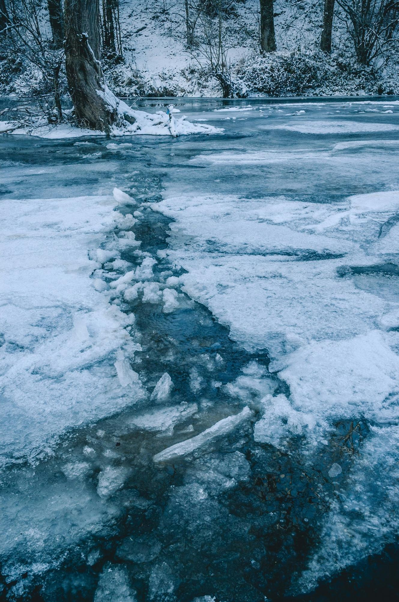
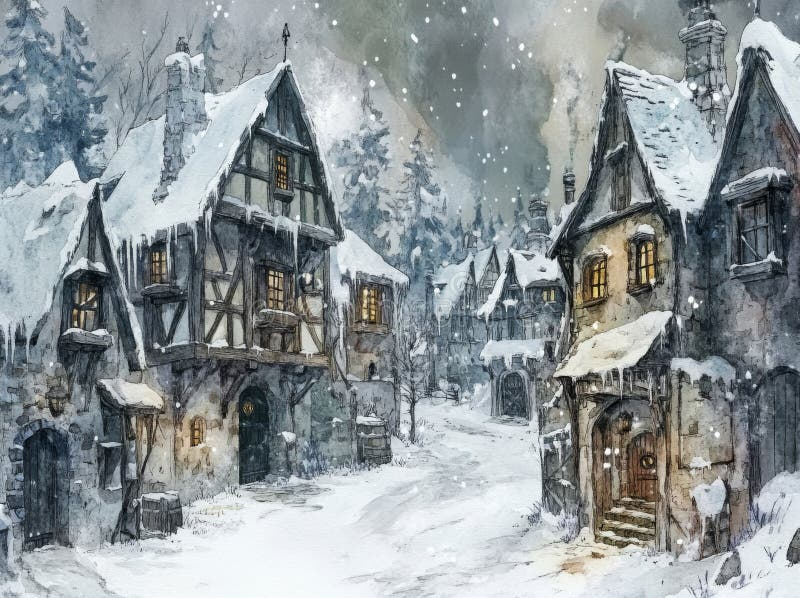
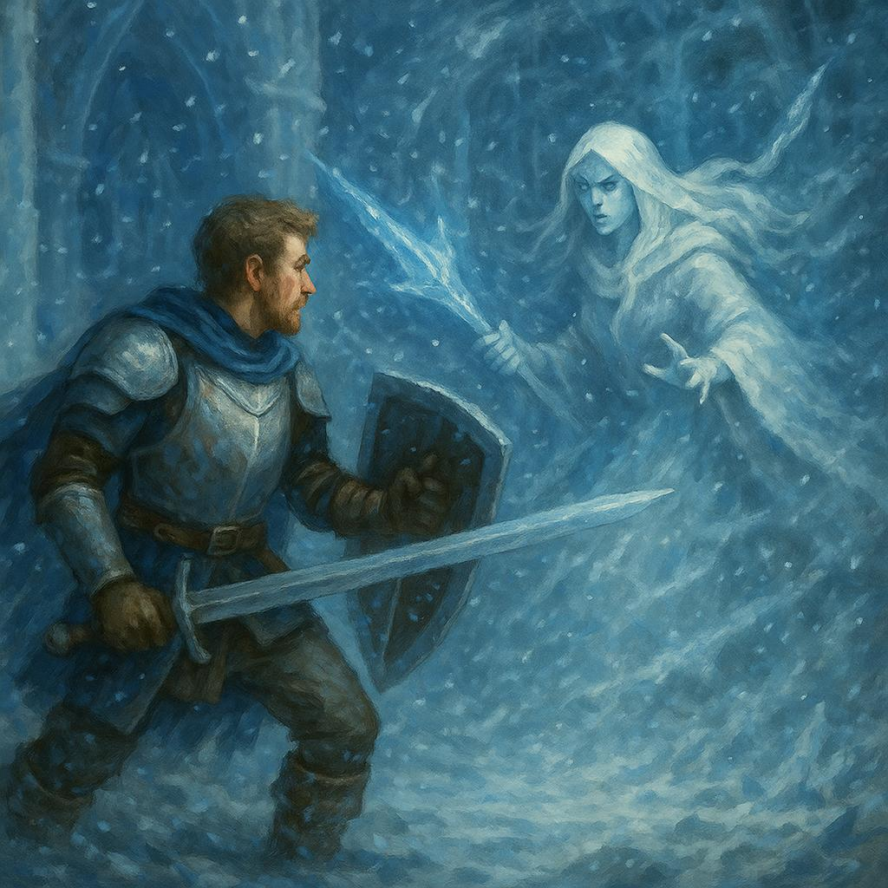
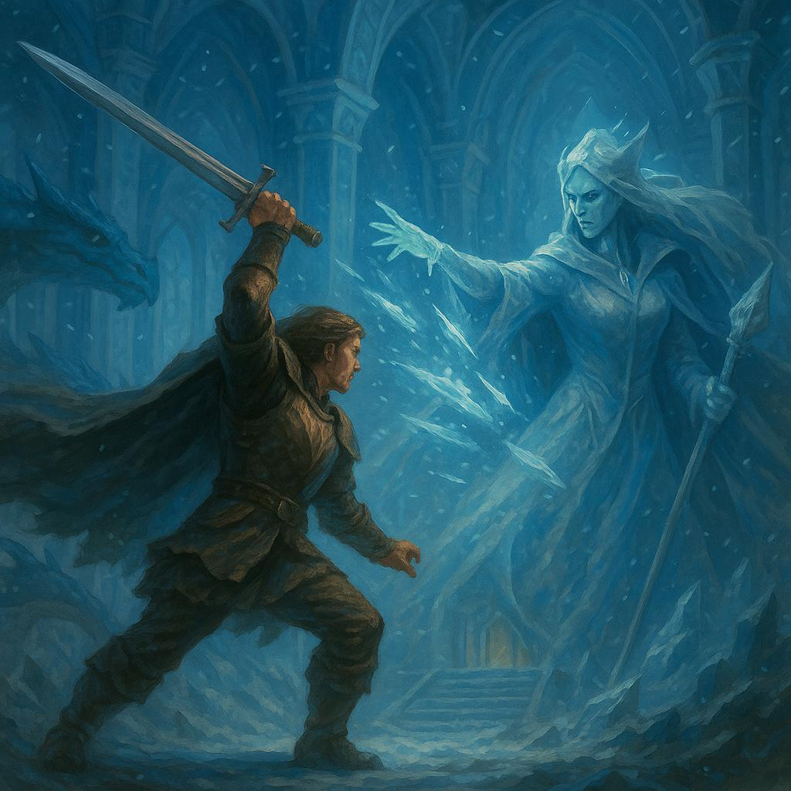

Valley of Dragons II:
Winter of Wolves
The Valley of Dragons is a sanctuary of harmony where humans, elves, and dragons coexist in peace. The mighty Dragon Rider Knights, a symbol of unity in the valley that arose in response to the Attack of the Dark God, are called to help when the icy grip of a mysterious and unnatural winter descends upon the valley.
- Winter is coming.
- Attack of the Wolves.
- Frozen River.
- The Winter’s Voice.
- The Council.
- The Expedition.
- Tundra.
- Frozen Forest.
- Castle of Ice.
- Spring’s Return.
750 Words per part plus 1000 words of battle scenes. 8500 Words.
Medium language. 3rd person. Epic and righteous tone. Happy ending.
The first snow came early that year, far earlier than anyone in the valley could remember. What began as a gentle frost grew into an inclement blanket of ice and snow that refused to melt, even under the midday sun. The crisp autumn air that once carried the earthy scent of harvested fields and falling leaves now stung with a biting chill. Artisans and merchants alike hurried through the frozen streets of River City, their breaths forming puffs of vapor, their faces drawn with worry.

Alaric watched from the distant silhouette of Castle Tarn, his sapphire-blue dragon Vaelor perched behind him, steam rising from the great beast’s nostrils. From this vantage point, Alaric could see the Silver River winding through the valley. Now, the river was frozen, its once-glimmering surface dull and lifeless. The river’s freeze was troubling enough, but what unnerved Alaric more was the silence of the valley. No birds called from the sky, no forest creatures moved in the distance. It was as if the world itself were holding its breath.


“It’s not just the cold, is it?” Alaric murmured, turning to Vaelor. The dragon huffed, his blue-scaled chest swelling with the heat of his fire breath. Alaric placed a hand on the dragon’s side, feeling the tension in the beast’s muscles. “You feel it too,” he said quietly. Vaelor let out a low growl of agreement.
Across the battlements, a shout drew Alaric’s attention. A young knight in training, barely more than a squire, was racing toward him, his boots sliding on the icy stone. “Sir Alaric! Trouble in the lower villages! The cold’s taken the cattle, and they’re running out of food.”
Alaric’s jaw tightened. This was the third such report in as many days. “Summon the relief team,” he ordered. “We’ll need to bring what supplies we can spare. And tell the riders to prepare—Vaelor and I will fly ahead.”
The squire hesitated, his eyes wide. “But, sir, what about the reports from the western towns? They’ve asked for aid too.”
Alaric sighed, rubbing his temple. The Dragon Rider Knights had always been enough to safeguard the valley, but this winter’s sudden, unrelenting grasp was stretching them thin. Gawain and Percival were already out, each leading missions to other corners of the valley. That left Alaric to manage the central regions, and every day brought more cries for help.
“We’ll split our forces,” Alaric said at last. “Send word to Forest City—perhaps the elves can send assistance to the west. For now, we do what we can.”
Within moments, Alaric was in the air, Vaelor’s mighty wings slicing through the frigid wind. Below, the valley spread out in stark shades of white and gray, a landscape transformed. The once-busy roads were now treacherous trails, and the villagers trudged through heaps of snow formed by the wind to fetch water from frozen wells. Alaric scanned the horizon, his heart heavy.

When they reached the lower villages, the situation was as grim as he feared. Smoke rose weakly from chimneys, the fires within struggling to fend off the cold. Farmers and their frost-covered livestock clustered around each other trying to save themselves from the biting chill. Alaric dismounted and approached a group of villagers huddled by the frozen well.
“You’ve come,” an older man said, his voice shaking with relief. His face was red from the cold, and his hands were raw from chopping ice to free water. “Thank the gods. I wasn’t sure how much longer we could last.”
“We’ll help you through this,” Alaric said firmly. “The Order has supplies on the way. You’ll have enough to keep warm and fed until spring.”
The man’s expression faltered. “What if spring doesn’t come?”
The question hung in the icy air, unspoken fears reflected in every villager’s face. Alaric didn’t have an answer, so he simply placed a hand on the man’s shoulder and said, “We won’t let it come to that.”
Later that night, as Alaric and Vaelor rested in a stable (the only place where the dragon would fit) accompanied only by a fire, the knight stared into the flames, his thoughts troubled. This winter was unlike anything the valley had ever faced. Its sudden arrival, its unyielding nature—it felt unnatural, wrong. He thought back to the legends he’d heard as a boy, of ancient curses and forgotten gods who wielded the powers of nature.
“Is it possible?” he whispered, though the crackle of the fire and Vaelor’s steady breathing were his only answers.
Alaric couldn’t shake the feeling that this mysterious winter was more than just weather.
The midday sun shone beautifully over River City through the frozen and clean air. But the streets were unnaturally quiet. Sparkling snow blanketed the rooftops and clogged the narrow alleys where merchants would normally shout over bustling crowds. Now, the only sounds were the low, distant howls carried on the icy and clear air—a sound that chilled the heart of everyone who heard it.

Alaric’s breath misted in the air as Vaelor descended toward the city gates. Below, the River Guard stood watch, spears in hand, their faces pale and tense. Some villagers peered out from behind shutters, while others barricaded their doors against the looming threat.
Brynar, the captain of the guard, met Alaric as he landed. “Paladin Alaric,” the captain said, clutching his spear with white-knuckled hands. “They’ve been coming at night. Wolves, but not like anything we’ve ever seen. They’re enormous, and their breath freezes the air in front of them.”
Alaric nodded grimly. “How many have you counted?”
“Dozens,” the captain said. “They attacked outlying farms first, but it won’t be long before they come for the city itself.”
As if to punctuate his words, a howl echoed through the hills, followed by several more. The sound was closer than before.
“Rally your best fighters.” Alaric said, his tone firm. “We’ll track down these beasts and end this threat once and for all."
The pack came with the wind, their forms going over the snowy hills. Each wolf was twice the natural size, their thick white coats blending seamlessly into the frozen landscape. Their eyes glowed an unnatural blue, and their breath left trails of frost in the air.

Alaric stood on the icy plains in front of the city with a small force of River Guard at his back, Vaelor towering protectively behind him. The guards had been trained by the knights themselves, but nothing could have prepared them for the sight of these wolves.
“Hold steady!” Alaric called, his voice cutting through the rising panic. He raised his sword, the steel catching the strong sunlight that traveled through the clear and cold air.
The first wolf lunged, its massive paws crunching through the snow. Alaric met it head-on, his blade slicing through the air as Vaelor roared behind him. The wolf twisted mid-leap, dodging Alaric’s strike with an unnatural agility. Its claws raked at his shield, the impact driving him back a step.
Vaelor’s fiery breath surged forward, engulfing the wolf in a plume of heat. The creature howled in pain, retreating into the snow. The other wolves hesitated, their glowing eyes fixed warily on the dragon.
“Push forward!” Alaric commanded, seizing the moment.
The guards advanced in tight formation, their spears aimed outward. Vaelor unleashed another wave of fire, forcing the wolves to scatter. The flames left streaks of melted snow in the ground, a stark contrast to the frozen wasteland around them.
But the reprieve was short-lived. A second wave of wolves surged from the hills, their howls deafening. Alaric barely had time to raise his shield before another wolf barreled into him, its icy breath chilling the air between them. He thrust his sword upward, catching the beast in its flank. It yelped and fell back, but its packmates surged around it, circling the guards.
“These aren’t ordinary wolves!” one of the guards shouted, his voice trembling.
“And we are no ordinary men,” Alaric responded, tightening his grip on his sword.
The battle raged on as the sun dipped lower, casting the snow in shades of gray. Vaelor’s flames kept the wolves at bay, but they were relentless. They could drive the wolves back, but they were cautious and usually evaded any harm, tiring the soldiers in their futile attempts.
Alaric fought tirelessly, his movements precise and controlled, but even he was beginning to feel the strain. A particularly large wolf lunged for him, its jaws snapping inches from his shield. Before it could strike again, a spear flew through the air, piercing its side. Alaric glanced back to see Brynar, the captain of the guard, his face set with determination.
“Good throw!” Alaric shouted, raising his sword.
The tide began to turn as the River Guard rallied and started pushing in formation. Guided by the paladin of the dragon riders, their attacks became more measured and precise, landing more strikes. Vaelor took off and circled over them, his fiery breath carving out a safe perimeter. Slowly, the wolves’ numbers dwindled and were forced to retreat, their howls fading into the distance.
When the last of the pack had disappeared over the hills, Alaric lowered his sword, his breath heavy from exhaustion. Around him, the guards leaned on their spears, their faces pale but triumphant.
“They’ll be back,” the captain said, his voice weary but resolute.
“Yes,” Alaric replied. He turned to Vaelor, who rumbled softly, his chest still glowing with residual heat. “And we’ll be ready for them.”
That night, as the fires in River City burned brightly against the encroaching cold, Alaric stood alone at the city walls, watching the snow fall. He couldn’t shake the unease that had settled in his chest.
These wolves weren’t just the product of a harsh winter. They were something more—something unnatural. And if they were a sign of what was to come, the valley was in far greater danger than anyone realized.
The Silver River was the valley’s lifeblood and connected all of its inhabitants. Its waters carried goods from the highlands to River City, powered mills and forges, and nourished the fertile lands of the valley. Now, as Alaric stood on its frozen bank, he felt an unfamiliar weight settle in his chest. The river, once shimmering and flowing, was silent and still beneath a thick layer of ice.


Merchants with loaded carts had gathered near the frozen docks, their faces somber. Fishermen stood helplessly by their boats, now locked in place by the frost. Children, who might have delighted in skating across the surface, huddled indoors for warmth. The frost gnawed at everyone, but the frozen river was the final blow. Without it, the valley’s lifeline was severed.
Alaric knelt and placed a gloved hand on the ice. It was thick, unnaturally so. He tapped it lightly with the hilt of his sword, making a dull, solid sound. This wasn’t natural. Rivers froze in patches during harsh winters, but never so quickly and completely—not like this.
“This is bad,” came a voice behind him. Alaric turned to see paladin Gawain dismounting from his dragon, Alderyth. The silver-scaled beast exhaled a puff of steam, his claws crunching against the icy ground.
“Worse than bad,” Alaric replied. “The river is the main artery of the valley. Without it, trade routes and travel are broken. Supplies are stranded in the mountains, and even the troops we’ve stationed in the west won’t get reinforcements or provisions. If this lasts, people will starve.”
Gawain stepped forward, his gaze hard. “It’s more than just trade. This river binds the valley together. Without it, we lose connection. Villages will start to fend for themselves, and isolation breeds desperation. If the wolves strike again, people might not have the strength—or the courage—to resist.”
Alaric straightened, his jaw tightening. “Percival should hear this.”
Later that day, the three paladins convened in the war room at Castle Tarn. Gawain leaned over the table, studying a map of the valley, while Alaric paced restlessly. Percival, ever calm and composed, stood with his arms crossed, his brow furrowed in thought.
“We’re dealing with more than a harsh winter,” Gawain said, his voice steady but grave. “The wolves, the river, the endless snow—this is coordinated. Someone, or something, is doing this deliberately.”
Percival nodded slowly. “The wolves aren’t natural, that much is clear. But the river?” He glanced at Alaric. “Do you think magic is involved?”
Alaric hesitated. “I don’t know. There’s no sign of it—no runes, no residue, nothing overt. But it doesn’t feel right. Rivers don’t freeze like that, not this quickly, not this completely.”
“Agreed,” Percival said. He turned his attention to the map. “If I were trying to take over the valley, freezing the river would be my first move. Cripple the supply lines, and the people will panic before any army strikes.”
Alaric stopped pacing and faced them. “Then we need to act. We can’t just respond to emergencies; we need to get ahead of this. Find the source, stop it at the root.”
Percival met his gaze, his expression thoughtful. “Agreed, but we need more information. A frozen river and wolves aren’t enough to build a strategy on. Where can we start?”
Alaric thought for a moment. “The wolves. They’re more than just a threat; they’re a clue. They’re not behaving like animals. If we track them back to where they came from, we might find whoever—or whatever—is controlling them.”
Gawain nodded. “Then we’ll divide our forces. Percival, you can communicate with the towns in the valley and coordinate the supply lines. I can lead the guards for the caravans. Alaric will investigate the wolves.”
That evening, Alaric returned to Vaelor, who was perched on the castle’s northern wall. The dragon rumbled softly as Alaric approached, sensing his rider’s unease.
“We’re going to find it,” Alaric said, resting a hand on Vaelor’s warm scales. “Whoever’s behind this—he won’t get away with it.”
Vaelor huffed, a cloud of steam escaping his nostrils. Alaric smiled faintly and climbed into the saddle. Together, they took off into the icy night, the wind biting at their faces. Below them, the frozen river stretched like a lifeless scar through the valley.
Alaric’s resolve hardened. Whoever was behind this winter would soon face the full might of the Dragon Rider Knights.
The sky was a full cloudy white, the clouds heavy with snow that never seemed to stop falling. Alaric stood atop the battlements of Castle Tarn, scanning the horizon for any sign of movement. The reports had been quiet for the past few days—too quiet. No frost wolves had been sighted since the last attack, yet the unnatural winter pressed on, unrelenting.
Vaelor perched nearby, his sapphire scales glinting faintly under the muted light. The dragon rumbled low in his chest, restless and uneasy. Alaric understood the feeling all too well.
Suddenly, a shift in the wind drew Alaric’s attention. The air grew colder, even more biting than before, and a strange sound echoed through the valley. It wasn’t the howl of wolves or the rustle of snow-laden trees. It was a voice, deep and resonant, carrying a feminine power that seemed to chill the very soul.
“People of the valley,” the voice boomed, echoing across the frozen land.
Alaric stiffened, his hand instinctively gripping the hilt of his sword. Vaelor raised his head, his golden eyes narrowing as a plume of steam escaped his nostrils.
The clouds above began to shift, swirling into a vortex of icy mist. As the winds howled, the mist coalesced into a massive figure, her form towering over the valley. It was a face sharp and regal, framed by icy strands of hair that seemed to shimmer like frost in the sunlight. Her eyes were cold and piercing. Her presence exuded power and authority, but also a harsh, unyielding chill.

“I am Freyja,” the figure proclaimed, her voice reverberating like a winter storm. “The Goddess of Winter. This valley belongs to me now, as it should have always been. The warmth and chaos you have clung to are over. I bring cold, order and stability. All I ask is your loyalty.”
Alaric’s heart pounded as her words hung in the frozen air. He looked down at the villages below, where frightened faces peeked out from windows and doorways. Even from this distance, he could feel their fear.
“Loyalty.” Freyja continued, her voice softening but losing none of its intensity. “In exchange, I will teach you how to thrive in my winter. You will no longer need the fleeting comforts of the sun or the fragile balance of seasons. You will become part of my kingdom of eternal winter and order.”
Alaric’s grip tightened on his sword. Her words were imposing, almost enticing, but the underlying threat was unmistakable. This wasn’t an offer—it was a demand.
Freyja’s gaze swept over the valley, and for a moment, it seemed to linger on Alaric. “Resist me, and you will know the full wrath of winter. Your rivers will freeze beyond hope, your crops will wither, and your people will starve. But bow to me, and I will show mercy. Together, we will build a new world—stronger, better.”
The swirling mist began to dissipate, her towering figure fading into the storm. Her final words echoed in the wind, chilling and absolute: “You have until the next full moon to decide.”
Alaric didn’t wait for the silence to settle. He turned to Vaelor, his voice firm. “We’re leaving.” Within minutes, they were airborne, the icy wind cutting against his face as Vaelor’s powerful wings carried them toward Forest City.
The Forest City council chamber had never been so crowded. Normally, it served as a meeting hall for the elves, its columns formed from living trees that spiraled upward to create a dome of intertwined branches. Light filtered in through crystal windows, casting shimmering patterns across the floor. Representatives from every corner of the valley had gathered inside agitated in anticipation of the meeting.

Alaric stood with Gawain and Percival near the head of the chamber. Seated before them were human mayors, elven elders, and a delegation of dragons. Though their numbers were small, they represented the collective will of the peoples of the valley.
Gawain began, his voice measured and firm. “We face an enemy unlike any other. Freyja calls herself the Goddess of Winter, and she claims dominion over this valley. Her proclamation is clear: submit or suffer the full might of her wrath. You have all seen the signs—this winter is no natural event. It is her doing.”
A ripple of murmurs swept through the chamber. Alaric could see fear etched into the faces of the representatives. These were people who had lived through harsh times during the war against the Dark God, but even they were shaken by the prospect of a foe who wielded the very forces of nature.
An elven elder, her long silver hair flowing like a frozen stream, rose to speak. “Freyja’s offer is seductive,” she said, her voice calm but resolute. “She promises survival, even prosperity, under her rule. She claims we’ll thrive more in her cold, orderly dominion than in the warmth of our cherished freedom. But let us not mistake her words for generosity. She seeks control, not cooperation.”
Another representative, the mayor of River City, stood next. He was a refined man with a confident face and a smart voice, trained by years of politics and trading experience. “I agree,” he said, his tone proud. “Freyja may claim she’s doing what’s best for us, but her demands reveal the truth. She’s not asking for our trust—she’s demanding our obedience. She’s a despot.”
Alaric stepped forward, his voice filling the chamber. “It is indeed wise to remember what gives authority its legitimacy. True authority comes from the consent of the governed. It is something given, not taken by force or fear. Freyja’s promises are but chains in disguise. If we bow to her, we surrender not only our freedom but everything that defines us.”
The chamber erupted in enthusiastic approval. Alaric could see hope returning to the representatives’ eyes.
Percival nodded in agreement. “Well said, Alaric. This valley has always thrived because of its unity—dragons, humans, and elves working together, freely and willingly. Freyja wants to make us her subjects, but we are not so easily broken.”
An elder dragon, his scales the color of deep granite, rumbled from his position near the back. His voice was slow and deliberate, like stones grinding together. “The Dragon Rider Knights have faced many threats. Gods, kings, and armies have tried to claim this valley before, and all have failed. Freyja will be no different.”
A murmur of agreement spread through the room, growing in strength. The council representatives began to rise, one by one, voicing their support.
“The elves will stand with the knights,” declared the silver-haired elder.
“River City will fight for the valley’s freedom,” said the mayor.
“And the dragons will lend their fire,” rumbled the granite-scaled elder.
Gawain raised his hand, calling for attention. “Then we are united,” he said, his voice carrying the weight of their resolve. “But unity is not enough. Freyja is no ordinary foe. We need a plan, and we need it quickly. The next full moon is not far, and we cannot afford to wait for her to strike.”
The discussion turned to strategy. Scouts were dispatched to locate Freyja’s Ice Castle, a task made difficult by the blizzards. Supplies were organized for a prolonged expedition, with elven hunters volunteering to gather food along the way.
Alaric listened carefully, occasionally offering input, but his mind was already turning to the challenges ahead. Freyja’s magic was unlike anything they had faced before. How could they stand against a goddess whose very presence changed the land?
As the meeting drew to a close, Gawain turned to Alaric. “You’ll lead the forward team, Alaric, accompanied by knight Caradoc. He is proving one of our best knights and this mission will let him prove his worth. Percival and I will command the reserve forces and ensure the valley remains defended. This mission will be dangerous, but you’re the best choice for it.”
Alaric nodded, the weight of responsibility settling on his shoulders. “I won’t let the valley down.”
Percival placed a hand on Alaric’s shoulder. “None of us will. Freyja may believe she holds all the power, but she underestimates the strength of people united by a common cause.”
As the council dispersed, Alaric stepped outside into the freezing air. Vaelor waited nearby, his glowing eyes watching his rider closely.
“We’re going into the storm, old friend,” Alaric said softly, placing a hand on the dragon’s side. “But I’ll take freedom over tyranny any day. We’ll show Freyja what this valley is made of.”
Vaelor huffed, a plume of steam escaping his nostrils. Together, they stared out at the snow-covered horizon, the full moon rising faintly behind the swirling clouds.
The battle for the valley’s freedom was just beginning.
The expedition passed through Greystone Pass, emerging from the valley’s familiar embrace, and turned north along the mountain range. Their journey brought them to the Waterfall of Giants, where the Silver River cascaded from the isolated peaks of the valley to the lower cold plains and hills below, carving its path northward. They moved like a thread of life through the frozen landscape, a line of bundled figures and heavily laden sleds winding their way northward. Snow crunched beneath boots and dragon claws, the sound muffled by the steady whistle of the wind. Above them, the sky was a pale, featureless gray, as if the storm clouds had swallowed the sun.

Alaric and Vaelor marched at the front of the army, behind them a mixed company of elves, humans, and knights, their breaths misting in the icy air. Despite their heavy furs and cloaks, the cold bit deeply, sapping strength and resolve with every step. Supplies were strapped tightly to sleds, pulled by sturdy draft animals and guarded carefully by elves armed with recurve bows.
“How much farther until we reach the tundra?” Alaric asked, his voice barely carrying over the wind.
Knight Caradoc, riding his blue dragon alongside the paladin, glanced at the map in his gloved hands. “If the scouts’ reports are accurate, two more days at this pace. The frozen river has forced us to take the long way around.”
Alaric frowned but nodded. “No choice but to push on. Everyone knows what’s at stake.”

As the day wore on, the wind grew stronger, whipping through the caravan and sending stinging sprays of snow into their faces. Alaric called a halt when they reached the shelter of a rocky overhang.
“Rest here,” he said, his voice firm but understanding. “We’ll need everyone at full strength when we reach the tundra. The worst is still ahead.”
The group gratefully unloaded their packs, huddling together in clusters for warmth. Fires sputtered and hissed as they tried to ignite them against the merciless cold. Vaelor and Caradoc’s dragon curled protectively around the group, their warm bodies providing some relief from the freezing wind.
Eloran, the elven plantsmith who had been part of so many of Alaric’s adventures and now part of the elf hunters, approached with a bundle of dried herbs. “Here,” he said, handing Alaric a small pouch. “Mix this with hot water. It will keep your strength up.”
Alaric accepted the pouch with a nod of thanks. “How are the others holding up?”
“Better than expected,” Eloran replied, his sharp elven eyes scanning the camp. “But morale is fragile. The farther we go, the more Freyja’s presence presses on us. She’s not just controlling the winter—she’s wearing on their spirits.”
Alaric glanced at the weary faces of his companions, their movements slow and shaky as they worked to set up camp. “We’ll need to stay ahead of that,” he said quietly.
That night, as the camp settled into an uneasy sleep, Alaric stood watch with Vaelor perched nearby. The stars were hidden behind a dense curtain of clouds, and the world seemed eerily still.
“Do you feel it?” Alaric asked softly, addressing his dragon. Vaelor let out a low rumble in response, his golden eyes scanning the darkness.
It wasn’t just the cold or the snow. There was something heavier in the air, a quiet, oppressive force that seemed to choke the very will to move. Alaric tightened his grip on his sword, resolving not to let it take hold of him.
The following day, the caravan pressed on, the landscape growing harsher with every mile. The frozen river lay behind them, replaced by jagged ice formations that sprung out of the ground like teeth. The snowmounds grew deeper, slowing the sleds as the draft animals struggled to find footing.
“Dragons overhead!” came a cry from the back of the caravan.
Alaric turned sharply, scanning the skies. A pair of knights on patrol swooped down, their dragons’ wings kicking up plumes of snow as they landed.
“Report,” Alaric called as they dismounted.
“Frost wolves,” one of the knights said breathlessly. “A pack was following the army from the west, but we scared them off. They’re keeping their distance for now.”
“Good work,” Alaric said. “Keep patrolling. If they get any closer, let us know immediately.”
The knights nodded and took off again, their dragons’ wings beating powerfully against the icy air.
As the caravan approached the edge of the tundra that evening, they spotted the silhouette of an ancient stone monument rising out of the snow. It was a weathered obelisk, its surface etched with runes that were barely visible beneath the frost.
“What is that?” the paladin asked, his voice filled with curiosity and unease.
“A marker,” Eloran said. “The elves who first explored these lands left these behind to warn others. This one marks the edge of Freyja’s realm. Beyond this point, the winter becomes even harsher.”
Alaric stared at the monument, a sense of foreboding creeping over him. The tundra lay just beyond, a vast, open expanse that stretched toward the horizon. If the caravan had faced challenges before, they would pale in comparison to what lay ahead.
He turned to the group, raising his voice so all could hear. “This is the edge of Freyja’s domain. Beyond here, the cold will only get worse, and the dangers will grow. But we’ve come this far because we are fighting for the valley. Stay strong, and we will see this through together.”
A murmur of agreement rippled through the caravan, and Alaric felt a surge of pride. No matter how harsh the journey became, they would press on.
The tundra stretched before them like an endless sea of ice and snow, a barren expanse where the horizon seemed to blur with the low gusts of wind dragging snow and ice particles.The wind’s biting chill could cut through even the thickest furs. For the members of the expedition, every step was a struggle, the snowmounds deepening with each mile.

Alaric led the way atop Vaelor, the dragon’s massive claws crunching into the snow with deliberate care. Behind him, Caradoc and his blue dragon, flanked the caravan’s left side, while Eloran rode at the center, his sharp elven eyes scanning the surroundings for signs of movement. Despite the cold, Alaric kept his sword ready. This land felt hostile, and danger lurked just beyond sight.
“Stay close and stay alert,” Alaric called to the caravan. “If you see anything, call it out immediately.”
A murmur of acknowledgment spread through the group, but their voices were quickly swallowed by the wind.
By midday, familiar howls echoed across the plain, far away but unmistakable. The caravan came to an abrupt halt, heads swiveling as the sound grew louder.
“Ice wolves,” Eloran said, his tone grim.
Alaric squinted into the distance and saw them—dozens of white shapes emerging from the swirling snow, their glowing eyes fixed on the caravan. These wolves were even larger than the ones that had attacked River City, their fur bristling with frost and their movements unnervingly coordinated.
“They’re testing us,” Caradoc said, drawing his sword. “Seeing how we’ll react.”
“They’ll find out soon enough,” Alaric replied, signaling to Vaelor.
The dragon let out a deafening roar, his chest glowing with the heat of the fire he held in reserve. The wolves hesitated, their advance slowing as they assessed the threat. But then, as if spurred by some unseen force, they surged forward in unison.
“Defensive positions!” Alaric shouted.
The howling winds of the tundra were deafening, but the snarls of the frost wolves rose above them. The caravan had formed a defensive circle, carts and shields creating a barrier against the relentless pack. Soldiers braced their spears and shields as the wolves attacked them from all sides.
Alaric, atop Vaelor, shouted over the chaos. “Hold the line! Protect the caravan!” Vaelor’s fiery breath forced several wolves to retreat, but more surged forward to take their place. The fight continued for long and intense minutes, but just as exhaustion gripped the defenders, the attack suddenly stalled. The wolves backed away, their growls softening into silence.

From the swirling snow, the alpha wolf emerged—bigger, its silver-white fur glistening with frost. Its glowing blue eyes fixed on Alaric. The pack watched silently as the alpha strode forward, its presence commanding respect.
“Alaric,” Eloran called. “It’s challenging you. It knows you’re the leader.”
Alaric nodded, gripping his sword. “Stay back. This is my fight.” Dismounting Vaelor, he stepped forward, meeting the wolf’s challenge. The alpha growled, circling Alaric with deliberate movements.
The duel began with a blur of motion. The wolf lunged, claws slashing through the air, but Alaric sidestepped, parrying with precision. Its next strike scraped against his shield, the sound sharp as ice shattering. Alaric countered, his blade grazing its shoulder, drawing a howl of pain.
The wolf retaliated, knocking Alaric’s shield aside. He rolled away, regaining his footing just as it leapt again. Timing his strike, Alaric drove his sword forward, meeting the wolf midair. The alpha dropped on the snow. It rose slowly, its glowing eyes locking with Alaric’s. Then, it let out its last mournful howl.
The pack echoed the call and began retreating into the storm. Alaric lowered his sword, his breath ragged. “It’s over,” he murmured, turning to Vaelor, who rumbled softly in approval. The wolves were gone, and for now, the path ahead was clear.
The caravan regrouped, tending to the wounded and salvaging what supplies they could. Morale was low, but Alaric knew they couldn’t afford to stop. The tundra stretched on before them, and Freyja’s Ice Castle lay somewhere beyond its frozen expanse.
“Are we sure we can make it?” one of the younger knights asked, his voice shaking.
“We can,” Alaric said firmly. “And we will. Freyja wants us to falter. She wants us to turn back. But if we stop now, the valley is lost. We’ll show her that we don’t give up so easily. Let’s keep moving, we have to find shelter before the night.”
The knight nodded, his resolve hardening. Slowly, the caravan began to move again, the faint tracks of their sleds and boots quickly erased by the falling snow.
As night fell, the temperature plummeted even further. The group found shelter in a shallow cave, its walls lined with jagged icicles. Fires were lit, and the caravan huddled close for warmth.
Alaric sat with Vaelor at the entrance, his sword resting across his lap. The tundra stretched out before him, a vast, featureless void under the dim light of the moon. Somewhere out there, Freyja was watching, her presence an unseen weight pressing down on them.
“We’ll find her,” Alaric murmured, his breath fogging the air. “And we’ll show her that the valley belongs to its people.”
Vaelor rumbled softly in agreement, his glowing eyes fixed on the distant horizon.
The tundra gave way to a surreal, glacial expanse known as the Frozen Forest. Towering crystalline trees loomed over the expedition, their spectral white branches reaching skyward like icy claws. Alaric dismounted Vaelor, his boots crunching against the frostbound ground.

Suddenly, a forward scout came sprinting back to the army. “An enemy force is up ahead! They’re entrenched on two hills, and they’ve got siege weapons.” the man gasped.
Gathering the commanders in a small clearing, Alaric examined the enemy’s position. Two snow-laden hills dominated the landscape, each bristling with siege weapons and archers. Between the hills, a group of enormous mountain giants lumbered, their tall forms exuding brutish power. Among them, viking warriors, clad in furs and armed with axes and shields, chanted their battle cries in preparation, their loyalty to Freyja evident.
“We can’t face them head-on,” Caradoc said, tracing a path through the map with his finger. “Their archers and siege weapons will tear us apart before we get close.”
Eloran’s gaze shifted to the dense forest to their right. “The forest is our best ally. Their siege weapons can’t target us there, and we’ll have cover. A flanking maneuver could take out their artillery while the infantry pushes the center.”
Alaric nodded. “Exactly. We’ll send a group of knights and Dragon Riders through the forest to strike at their siege weapons. The rest of the force will charge the hills and engage the viking warriors.”
“The Mountain Giants are very dangerous,” Caradoc warned. “We’ll have to avoid getting stuck in melee combat with them at all costs.”
Alaric’s resolve hardened. “Vaelor and I will lead the charge in the forest. Caradoc, take the infantry to the center. Use the ballistae to target the giants. Everyone else, stick to the plan and stay focused. We can win this.”

The army moved into position, the cold air filled with tense murmurs and the clatter of weapons. As the signal was given, the infantry charged forward, their war cries echoing across the tundra. The giants taunted in response, their thunderous steps shaking the ground, but stayed in place. The viking warriors stayed in two formations one on each hill, their axes gleaming in the pale light as they howled Freyja’s name.
Meanwhile, Alaric led his Dragon Riders and knights into the cover of the forest. The icy branches muffled the sounds of battle as they maneuvered through the trees, their presence cloaked in shadows. Vaelor’s massive form moved with surprising grace, his golden eyes fixed on the hills ahead.
The enemy’s siege weapons fired, massive projectiles soaring through the air and crashing into the allied infantry. Screams and fear erupted, but Caradoc’s voice rang out, rallying the troops to keep advancing.
“Ballistae, fire on the giants!” he ordered.
The ballistae launched their furious bolts into the Mountain Giants. The infantry pressed on, clashing with the viking warriors’ shield wall in a brutal melee.
From the forest, Alaric’s team reached the edge of the enemy’s position. “Now!” he commanded.
Vaelor took off and sprung at the nearest siege weapon, engulfing it in flames. The enemy’s archers turned their attention to the forest, losing arrows that shattered against Vaelor’s scaled hide. The knights charged forward with their horses, cutting down the defenders with precision and speed.
One of the siege weapons swiveled toward the forest, but before it could fire, another Dragon Rider descended from above and unleashed a torrent of flame that obliterated the weapon and its crew.
“Keep pushing!” Alaric shouted, his sword flashing as he cut through an enemy soldier. “We need to take them all out!”
Back in the center, the battle with the Mountain Giants reached a high point. The giants swung their massive clubs, scattering soldiers. Caradoc’s dragon engaged one of the giants directly, biting and clawing at its thick hide. The archers targeted the giants to take them down safely while the infantry passed by them, hacking at the vikings with their swords and gaining ground. The norsemen fought tooth and nail, their battle cries merging with the chaos of the battlefield.
The tide began to turn as the siege weapons fell to Alaric’s flanking force. The enemy’s coordination faltered, and their lines began to collapse. With a final, earth-shaking roar, the last Mountain Giant fell, crashing to the ground.
“Victory!” Alaric called, his voice carrying over the battlefield.
As the remaining enemy forces fled into the tundra, Alaric’s team regrouped with the main army. The soldiers erupted in cheers, their triumph lifting the oppressive weight of Freyja’s magic, if only for a moment.
Alaric looked over the battlefield, his heart heavy despite the victory. “This was just one battle,” he said quietly to Vaelor. “The real fight is still ahead.”
The dragon rumbled in agreement, his golden eyes fixed on the horizon where Freyja’s Ice Castle loomed in the distance, its jagged spires a stark reminder of the challenges yet to come.
The Ice Castle loomed on the horizon, an awe-inspiring structure of vibrant, frost-covered architecture. Its grounds stretched across an expansive plateau, where Ice Wolves prowled and Winter Ravens circled above, their piercing cries echoing through the frozen air. The castle’s frost-streaked blue brick walls enclosed a vast interior courtyard, creating an imposing barrier for any would-be attackers.

At the center of the courtyard stood the Palace, an opulent masterpiece of frost-coated splendor. Its colorful spires soared skyward in dazzling hues of blue, red, and green. Intricate arches and domes, adorned with exquisite gold designs, crowned its facade, blending majesty with a chilling desolation. Siege weapons loomed atop, poised to rain destruction on any who dared approach.
The castle’s defenses were formidable. Viking archers lined the frost-covered walls, ready to rain arrows upon attackers. Inside the courtyard, Freyja’s Varangian Guard—a disciplined and elite force of Viking warriors armed with heavy axes and shields—stood in tight formations, accompanied by towering Mountain Giants. These giants, wielding colossal clubs, waited to crush any foe brave enough to breach the gates.
“This will be the hardest battle we’ve ever faced,” Alaric said, addressing his commanders. “The siege weapons and archers are our first priority. We need to win that battle to storm the castle. After that, we’ll face their infantry and giants inside. Freyja will be the final challenge, and she won’t go down easily.”
The battle began with fury as the army’s ballistae and trebuchets launched their first volleys. The duel of artillery and archers was fierce, with both sides sustaining heavy losses. The expedition’s trebuchets strained, their crews working tirelessly to outpace the enemy siege weapons.
As the exchange of projectiles raged above, the allied infantry began their charge toward the gates. Ice Wolves prowled the battlefield, striking opportunistically at stragglers and disrupting formations. Winter Ravens swooped down from above, targeting the allied siege weapons and harassing their crews. The expedition’s archers were forced to divide their attention between defending the ballistae from the ravens and dueling the Viking archers manning the walls. Alaric, atop Vaelor, directed the Dragon Riders to target the enemy siege engines.
“Aim for the siege weapons!” he commanded, his voice cutting through the chaos. Vaelor roared, unleashing a torrent of fire that engulfed one of the enemy’s trebuchets. One by one, the weapons atop the Palace fell, shards of wood and mechanical parts cascading down the walls. With the artillery battle won, the Dragon Riders turned their attention to the walls. The superior numbers of friendly archers thinned the Viking ones on the walls, allowing the Dragon Riders to strike down any remaining resistance. As the walls were secured, the Dragon Riders looked down at the courtyard below.
Having won the ranged battle and neutralized the ravens and wolves outside, the attacking infantry were forced to funnel through the gates into the courtyard, where the Varangian Guard and Mountain Giants stood ready. The attackers pushed against the unyielding wall of axes and shields. The Dragon Riders swooped in cautiously, timing their strikes to pick off isolated defenders and weaken the enemy lines without exposing themselves to the disciplined formations below. Finally, the valley soldiers breached the gate, plunging the courtyard into chaos.
The Mountain Giants sent attackers flying with devastating sweeps of their clubs. Usually, the valley army would have used ranged weapons to weaken them from afar, but this time, they had no choice but to engage them in direct and costly melee combat. The Varangian Guard still held strong, their axes cleaving through any who approached. Slowly but surely, the expedition’s forces overwhelmed them, though not without significant losses.
As the final remnants of the defenders were subdued, Alaric and Vaelor entered the Palace where Freyja awaited them.
The grand hall of the Palace was a world of frost and light. Columns of ice rose to a vaulted ceiling that shimmered with a cold, ethereal glow. At the far end of the chamber, Freyja, the Winter Goddess, stood regally upon her throne, her form cloaked in still white robes the color of snow in the wind. Her eyes, glacial and piercing, locked onto Alaric as he entered, the sound of his boots crunching on the frosted floor breaking the silence.

“Alaric,” Freyja’s voice echoed through the hall, as cold and commanding as the winter she wielded. “You have come far, but this is where your journey ends. The valley belongs to me now. You cannot deny the order I bring.”
“I came to stop you,” Alaric replied, his sword gleaming faintly in the frozen light. “Your order is a cage, and your power has brought only suffering. This valley doesn’t belong to you—it belongs to its free people.”
Freyja rose from her throne, her presence filling the chamber. “People cannot govern themselves, Alaric. Without my guidance, they falter, driven by greed, weakness, and chaos. I bring stability, strength, and unity. What do you offer? More chaos?”
Alaric’s grip tightened on his sword. “True strength comes from freedom, not fear. People don’t need chains to thrive—they need the chance to choose their own paths.”
Freyja’s expression hardened, and with a wave of her hand, the temperature in the room plummeted further. Ice spread across the floor, creeping toward Alaric as jagged shards formed over the stone. “Then you leave me no choice,” she said. “I will show you the folly of your ideals.”
The battle began with a crackling surge of icy magic. Freyja hurled spears of frost toward Alaric, each one shattering against the floor or walls as he dodged and weaved through the onslaught. With a roar, Vaelor attempted to intervene, but Freyja summoned a swirling storm that filled the chamber, separating the dragon from his rider.
“You fight alone now,” Freyja declared, her voice carrying over the howling wind. “This is where your futile resistance ends.”
Alaric lunged forward, his sword cutting through the frigid air. Freyja blocked the strike with a barrier of ice that shattered into glistening fragments. She countered with a wave of freezing wind, forcing Alaric to raise his shield as frost encased its edges.
“I have heard despots before,” Alaric said, his voice steady despite the cold. “They all claim to know what’s best for the people, but it’s never about the people. It’s about power.”
Freyja sneered. “Power is necessary to protect them. Without it, they are lost.”
“They’re not lost,” Alaric countered, driving her back with a series of precise strikes. “They’re stronger than you think, but you’ll never see it because you only trust control. You’re no savior—you’re a tyrant.”
Freyja’s fury erupted in a blizzard of frost and shards. The storm battered Alaric, but he pressed forward, using the rhythm of her attacks to close the distance. His sword struck true, slicing through her defenses and forcing her to stagger back.
“You speak of freedom,” Freyja spat, summoning a massive spear of ice. “But freedom breeds chaos. I offer them peace, structure, and unity!”
Alaric sidestepped the spear and closed the gap between them. “You offer them chains. Peace without choice is just another form of suffering.”
With a final, powerful swing, Alaric’s sword shattered Freyja’s icy weapon. The force of the blow sent her reeling, and her control over the storm faltered. The winds died down, and the frost receded, leaving the hall in an eerie silence.
Freyja fell to her knees, her shimmering form dimming as her strength waned. “Without me, they will fall to ruin,” she whispered, her voice carrying a note of desperation.
“No,” Alaric said, lowering his blade but keeping it ready. “They will prosper because they will be free.”
The Winter Goddess gazed at him, her expression a mixture of rage and sorrow, before her form dissolved into a cascade of snowflakes that melted as they touched the ground.
Vaelor approached, his golden eyes reflecting the fading light of the chamber. Alaric rested a hand on the dragon’s side, his breath misting in the cold air. The battle was over, and the valley was saved.
The valley awoke to a new dawn, finally free from Freyja’s grip. The first rays of sunlight broke through the dissipating storm clouds, bathing the land in a golden warmth for the first time in weeks. The ice that had halted the valley began to melt, sending streams of fresh and clear water cascading through the hills and nourishing the land. The air was alive again with the sound of rushing water, the chirping of birds, and the gentle rustle of awakening life.

The Silver River, once locked in Freyja’s icy spell, flowed freely once more. Its shimmering surface reflected the sunlight as trading boats traversed it, their sails billowing in the gentle breeze, while caravans moved merrily along the newly passable roads, bringing supplies to towns that had been isolated by the unrelenting winter.

In the towns and villages, people emerged from their homes, their faces alight with joy and relief. Laughter and cheer filled the streets as neighbors embraced. Children splashed in the cold but flowing streams, their giggles breaking the silence that had hung over them for weeks. Celebrations erupted throughout the valley, with tables laden with food and drink, musicians playing lively tunes, and people dancing around bonfires, celebrating the regained freedom.
Amid the celebrations, Alaric and Vaelor flew high above the valley, the dragon’s sapphire scales glinting in the sunlight. Alaric looked down at the vibrant scene below, his heart swelling with pride and relief. The valley was alive again, its people united and hopeful.

As they circled back toward Castle Tarn, Alaric thought of the battles fought and the sacrifices made. The scars left by Freyja’s winter would remain, but they were a reminder of the strength and resilience of the valley’s people. They had reclaimed their freedom, and with it, the promise of a brighter future.
Landing on the castle’s battlements, Alaric dismounted and turned to Vaelor. “It’s over, my friend,” he said, placing a hand on the dragon’s side. Vaelor rumbled softly in agreement, his golden eyes reflecting the warmth of the sun. Spring had finally returned.
The End